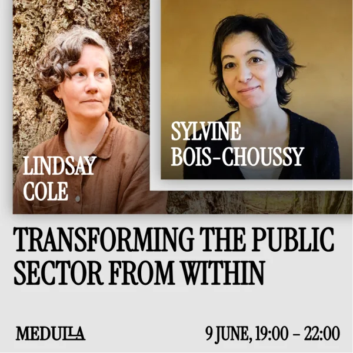
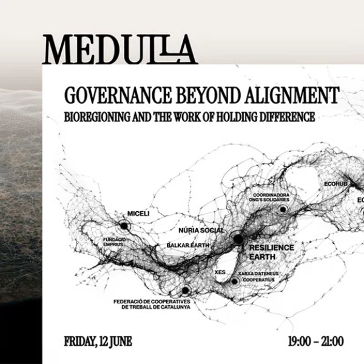
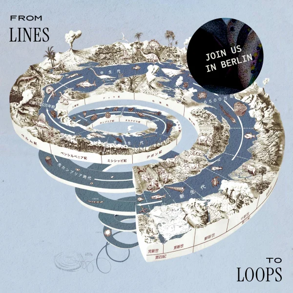

Tuesday, 9 June, 19:00 – 22:00
Transforming public sector from within
Book Launch with Lindsay Cole in conversation with Sylvine Bois-Choussy (La 27e Région)
Join us for the Berlin pre-release of Transforming the Public Sector From Within, a book by Lindsay Cole, PhD to be published by the University of Toronto Press. This will be an evening of connection, readings, reflection, and conversation on the lived realities of transformation work inside public systems.

Friday, 12 June, 19:00 – 21:00
Governance Beyond Alignment
Bioregioning and the work of holding difference
An evening on bioregioning and the work of holding difference — readings, reflection, and conversation across governance, ecology, and civic practice.

Thursday, 2 July, 18:00 – 21:00
From Lines to Loops: shifting beyond the dominant rhythms of time
With Ida Persson, sahibzada mayed & Christine Flanagan (DesignShifts)
Move through a series of timescapes beyond linear time — ancestral, ecological, and seasonal rhythms the dominant clock was never designed to hold — and reimagine time as a living, looping relationship, emergent and full of possibility.
